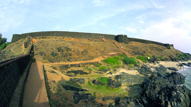
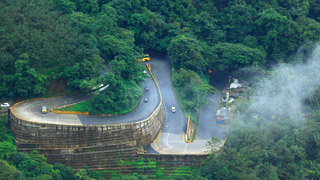
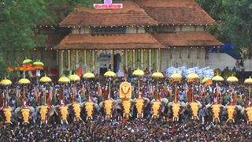
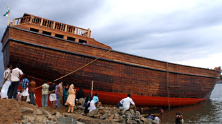

Kerala has 14 separate districts, each famous for its own set of unique destinations and features. Following is a list of that can be used to gain information on each individual district based on your preference. This is to aid you in the process of gaining more data regarding the areas you would like to visit and plan your trip accordingly.